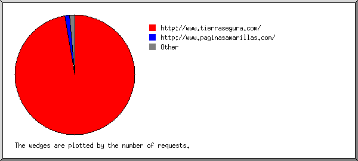

Web Server Statistics for tierrasegura.com Web Server Statistics for tierrasegura.com
Web Server Statistics for tierrasegura.com Web Server Statistics for tierrasegura.com(Go To: Top: General Summary: Monthly Report: Daily Summary: Hourly Summary: Domain Report: Organization Report: Failed Referrer Report: Referring Site Report: Browser Report: Browser Summary: Operating System Report: Status Code Report: File Size Report: File Type Report: Directory Report: Request Report)
(Figures in parentheses refer to the 7-day period ending Dec 31
2004 at 10:57 PM).
Successful requests: 4,150 (215)
Average successful requests per day: 96 (30)
Successful requests for pages: 594 (23)
Average successful requests for pages per day: 13 (3)
Failed requests: 35 (0)
Distinct files requested: 72 (30)
Distinct hosts served: 86 (1)
Data transferred: 19.620 megabytes (2.064 megabytes)
Average data transferred per day: 465.939 kilobytes (301.986 kilobytes)
(Go To: Top: General Summary: Monthly Report: Daily Summary: Hourly Summary: Domain Report: Organization Report: Failed Referrer Report: Referring Site Report: Browser Report: Browser Summary: Operating System Report: Status Code Report: File Size Report: File Type Report: Directory Report: Request Report)
Each unit ( ) represents 10 requests
for pages or part thereof.
) represents 10 requests
for pages or part thereof.
month: #reqs: #pages: --------: -----: ------: Nov 2004: 2589: 325:Busiest month: Nov 2004 (325 requests for pages).
(Go To: Top: General Summary: Monthly Report: Daily Summary: Hourly Summary: Domain Report: Organization Report: Failed Referrer Report: Referring Site Report: Browser Report: Browser Summary: Operating System Report: Status Code Report: File Size Report: File Type Report: Directory Report: Request Report)
Each unit () represents 4 requests
for pages or part thereof.
day: #reqs: #pages: ---: -----: ------: Sun: 198: 39:Mon: 638: 110:
Tue: 384: 50:
Fri: 1268: 160:
Sat: 122: 43:
(Go To: Top: General Summary: Monthly Report: Daily Summary: Hourly Summary: Domain Report: Organization Report: Failed Referrer Report: Referring Site Report: Browser Report: Browser Summary: Operating System Report: Status Code Report: File Size Report: File Type Report: Directory Report: Request Report)
Each unit () represents 2 requests
for pages or part thereof.
hour: #reqs: #pages: ----: -----: ------: 0: 28: 7:10: 643: 80:
(Go To: Top: General Summary: Monthly Report: Daily Summary: Hourly Summary: Domain Report: Organization Report: Failed Referrer Report: Referring Site Report: Browser Report: Browser Summary: Operating System Report: Status Code Report: File Size Report: File Type Report: Directory Report: Request Report)

Listing domains, sorted by the amount of traffic.
#reqs: %bytes: domain
-----: ------: ------
3602: 66.55%: .gt (Guatemala)
359: 22.04%: .net (Networks)
91: 7.36%: .com (Commercial)
91: 3.94%: [unresolved numerical addresses]
7: 0.10%: .sc (Seychelles)
(Go To: Top: General Summary: Monthly Report: Daily Summary: Hourly Summary: Domain Report: Organization Report: Failed Referrer Report: Referring Site Report: Browser Report: Browser Summary: Operating System Report: Status Code Report: File Size Report: File Type Report: Directory Report: Request Report)

Listing organizations, sorted by the number of requests.
#reqs: %bytes: organization
-----: ------: ------------
2044: 23.27%: guate.net.gt
1533: 41.91%: intelnet.net.gt
108: 6.15%: telefonica-ca.net
105: 3.09%: newcomamericas.net
90: 9.38%: gua.net
58: 2.22%: 66.201
54: 3.33%: t-dialin.net
51: 4.81%: alexa.com
31: 2.20%: cox-internet.com
25: 1.38%: 198.108
25: 1.38%: terra.com.gt
8: 0.31%: thunderstone.com
7: 0.10%: sc
6: 0.26%: 63.148
2: 0.08%: 12
1: 0.04%: netcraft.com
1: 0.04%: twtelecom.net
1: 0.04%: ev1servers.net
(Go To: Top: General Summary: Monthly Report: Daily Summary: Hourly Summary: Domain Report: Organization Report: Failed Referrer Report: Referring Site Report: Browser Report: Browser Summary: Operating System Report: Status Code Report: File Size Report: File Type Report: Directory Report: Request Report)

Listing referring URLs, sorted by the number of failed requests.
#reqs: URL
-----: ---
7: http://www.whois.sc/
1: http://www.tierrasegura.com/
(Go To: Top: General Summary: Monthly Report: Daily Summary: Hourly Summary: Domain Report: Organization Report: Failed Referrer Report: Referring Site Report: Browser Report: Browser Summary: Operating System Report: Status Code Report: File Size Report: File Type Report: Directory Report: Request Report)

Listing referring sites, sorted by the number of requests.
#reqs: site
-----: ----
2578: http://www.tierrasegura.com/
97: http://tierrasegura.com/
11: http://www.paginasamarillas.com/
7: http://www.whois.sc/
1: http://www.tierrasegura.com:2082/
1: http://inversionescf.com:2086/
(Go To: Top: General Summary: Monthly Report: Daily Summary: Hourly Summary: Domain Report: Organization Report: Failed Referrer Report: Referring Site Report: Browser Report: Browser Summary: Operating System Report: Status Code Report: File Size Report: File Type Report: Directory Report: Request Report)

Listing browsers with at least 1 request for a page, sorted by the number of requests for pages.
#reqs: #pages: browser
-----: ------: -------
451: 175: Mozilla/3.01 (compatible;)
1056: 164: Mozilla/4.0 (compatible; MSIE 6.0; Windows NT 5.1)
609: 81: Mozilla/4.0 (compatible; MSIE 6.0; Windows NT 5.1; SV1)
945: 71: Mozilla/4.0 (compatible; MSIE 6.0; Windows 98; FunWebProducts-MyWay; Alexa Toolbar)
51: 31: ia_archiver
7: 7: SurveyBot/2.3 (Whois Source)
56: 6: Mozilla/4.0 (compatible; MSIE 5.5; Windows 98)
55: 6: Mozilla/5.0 (Windows; U; Windows NT 5.1; en-US; rv:1.7.2) Gecko/20040804 Netscape/7.2 (ax)
164: 6: Mozilla/2.0 (compatible; MS FrontPage 4.0)
8: 6: Mozilla/4.0 (compatible; T-H-U-N-D-E-R-S-T-O-N-E)
6: 6: Mozilla/4.0 (compatible; MSIE 6.0; Windows XP)
38: 6: Mozilla/5.0 (Windows; U; Windows NT 5.1; es-ES; rv:1.7.1) Gecko/20040707
78: 5: Mozilla/4.0 (compatible; MSIE 6.0; Windows NT 5.1; .NET CLR 1.0.3705)
83: 5: Mozilla/4.0 (compatible; MSIE 6.0; Windows 98; Win 9x 4.90; ESB{EBD3F4D6-3393-41E2-9733-DB8659860613}; Alexa Toolbar)
54: 4: Mozilla/4.0 (compatible; MSIE 6.0; Windows NT 5.1; SV1; .NET CLR 1.1.4322)
31: 4: Mozilla/4.0 (compatible; MSIE 6.0; Windows NT 5.0)
58: 2: Mozilla/4.0 (compatible; MSIE 6.0; Windows NT 5.1; {87168E0E-AEA2-4C1F-8664-B2BD3B513ECC})
52: 2: Mozilla/5.0 (Windows; U; Windows NT 5.1; rv:1.7.3) Gecko/20041001 Firefox/0.10.1
1: 1: NPBot (http://www.nameprotect.com/botinfo.html)
1: 1: Mozilla/4.0 (Compatible; MSIE 6.0; Windows NT 5.1)
1: 1: Microsoft Data Access Internet Publishing Provider Cache Manager
1: 1: Sqworm/2.9.85-BETA (beta_release; 20011115-775; i686-pc-linux-gnu)
25: 1: Mozilla/4.0 (compatible; MSIE 6.0; Windows 98)
1: 1: curl/7.10.6 (i386-redhat-linux-gnu) libcurl/7.10.6 OpenSSL/0.9.7a ipv6 zlib/1.1.4
25: 1: Mozilla/4.0 (compatible; MSIE 5.5; Windows NT 4.0; DigExt)
293: 0: [not listed: 1 browser]
(Go To: Top: General Summary: Monthly Report: Daily Summary: Hourly Summary: Domain Report: Organization Report: Failed Referrer Report: Referring Site Report: Browser Report: Browser Summary: Operating System Report: Status Code Report: File Size Report: File Type Report: Directory Report: Request Report)

Listing browsers with at least 1 request for a page, sorted by the number of requests for pages.
#: #reqs: #pages: browser --: -----: ------: ------- 1: 3027: 351: MSIE : 2946: 344: MSIE/6 : 81: 7: MSIE/5 2: 623: 187: Netscape (compatible) 3: 51: 31: ia_archiver 4: 145: 14: Mozilla : 145: 14: Mozilla/1 5: 7: 7: SurveyBot : 7: 7: SurveyBot/2 6: 1: 1: Sqworm : 1: 1: Sqworm/2 7: 1: 1: Microsoft Data Access Internet Publishing Provider Cache Manager 8: 1: 1: NPBot (http: : 1: 1: NPBot (http://www 9: 1: 1: curl : 1: 1: curl/7 : 293: 0: [not listed: 1 browser]
(Go To: Top: General Summary: Monthly Report: Daily Summary: Hourly Summary: Domain Report: Organization Report: Failed Referrer Report: Referring Site Report: Browser Report: Browser Summary: Operating System Report: Status Code Report: File Size Report: File Type Report: Directory Report: Request Report)

Listing operating systems, sorted by the number of requests for pages.
#: #reqs: #pages: OS --: -----: ------: -- 1: 3172: 365: Windows : 1862: 263: Windows XP : 1026: 78: Windows 98 : 145: 14: Unknown Windows : 83: 5: Windows ME : 31: 4: Windows 2000 : 25: 1: Windows NT 2: 976: 227: OS unknown 3: 2: 2: Unix : 2: 2: Linux
(Go To: Top: General Summary: Monthly Report: Daily Summary: Hourly Summary: Domain Report: Organization Report: Failed Referrer Report: Referring Site Report: Browser Report: Browser Summary: Operating System Report: Status Code Report: File Size Report: File Type Report: Directory Report: Request Report)

Listing status codes, sorted numerically.
#reqs: status code
-----: -----------
1310: 200 OK
10: 206 Partial content
2830: 304 Not modified since last retrieval
6: 401 Authentication required
29: 404 Document not found
(Go To: Top: General Summary: Monthly Report: Daily Summary: Hourly Summary: Domain Report: Organization Report: Failed Referrer Report: Referring Site Report: Browser Report: Browser Summary: Operating System Report: Status Code Report: File Size Report: File Type Report: Directory Report: Request Report)

size: #reqs: %bytes:
-----------: -----: ------:
0: 2831: :
1b- 10b: 0: :
11b- 100b: 0: :
101b- 1kb: 355: 1.26%:
1kb- 10kb: 576: 14.56%:
10kb-100kb: 382: 64.23%:
100kb- 1Mb: 6: 19.96%:
(Go To: Top: General Summary: Monthly Report: Daily Summary: Hourly Summary: Domain Report: Organization Report: Failed Referrer Report: Referring Site Report: Browser Report: Browser Summary: Operating System Report: Status Code Report: File Size Report: File Type Report: Directory Report: Request Report)

Listing extensions with at least 0.1% of the traffic, sorted by the amount of traffic.
#reqs: %bytes: extension -----: ------: --------- 1171: 60.88%: .jpg [JPEG graphics] 223: 21.14%: .swf 470: 8.89%: .htm [Hypertext Markup Language] 285: 4.39%: .exe [Executables] 118: 2.05%: [directories] 1592: 1.32%: .gif [GIF graphics] 276: 1.30%: .js [JavaScript code] 15: 0.03%: [not listed: 2 extensions]
(Go To: Top: General Summary: Monthly Report: Daily Summary: Hourly Summary: Domain Report: Organization Report: Failed Referrer Report: Referring Site Report: Browser Report: Browser Summary: Operating System Report: Status Code Report: File Size Report: File Type Report: Directory Report: Request Report)

Listing directories with at least 0.01% of the traffic, sorted by the amount of traffic.
#reqs: %bytes: directory -----: ------: --------- 1394: 82.02%: /images/ 2462: 13.58%: [root directory] 294: 4.40%: /_vti_bin/
(Go To: Top: General Summary: Monthly Report: Daily Summary: Hourly Summary: Domain Report: Organization Report: Failed Referrer Report: Referring Site Report: Browser Report: Browser Summary: Operating System Report: Status Code Report: File Size Report: File Type Report: Directory Report: Request Report)

Listing files with at least 20 requests, sorted by the number of requests.
#reqs: %bytes: last time: file -----: ------: ------------------: ---- 285: 4.39%: Dec/ 6/04 9:20 AM: /_vti_bin/_vti_aut/author.exe 141: 0.41%: Dec/31/04 11:30 AM: /menu_.js 141: 3.06%: Dec/31/04 11:30 AM: /images/header.jpg 135: 1.48%: Dec/31/04 11:31 AM: /images/fondogris.jpg 135: 0.89%: Dec/31/04 11:30 AM: /xaramenu.js 134: 1.52%: Dec/31/04 11:30 AM: /images/servicios.jpg 133: 2.45%: Dec/31/04 11:30 AM: /images/foto1.jpg 133: 0.99%: Dec/31/04 11:30 AM: /images/fondoservicios.jpg 118: 2.05%: Dec/31/04 11:30 AM: / 15: 0.29%: Dec/31/04 11:30 AM: /?166.158.intelnet.net.gt 116: 0.08%: Dec/31/04 11:46 AM: /menu__b2_over.gif 115: 8.69%: Dec/31/04 11:30 AM: /images/rotativas2.swf 115: 0.11%: Dec/31/04 11:30 AM: /menu__b3_over.gif 115: 0.11%: Dec/31/04 11:30 AM: /menu__b3.gif 115: 0.11%: Dec/31/04 11:46 AM: /menu__b5.gif 114: 0.08%: Dec/31/04 11:30 AM: /menu__b1.gif 114: 0.09%: Dec/31/04 11:46 AM: /menu__b2.gif 113: 0.10%: Dec/31/04 11:30 AM: /menu__b5_over.gif 113: 0.10%: Dec/31/04 11:30 AM: /menu__b6.gif 112: 0.05%: Dec/31/04 11:30 AM: /menu__left.gif 112: 0.07%: Dec/31/04 11:30 AM: /menu__b1_over.gif 111: 0.10%: Dec/31/04 11:30 AM: /menu__b6_over.gif 111: 0.05%: Dec/31/04 11:30 AM: /menu__right.gif 110: 0.12%: Dec/31/04 11:30 AM: /menu__b4_over.gif 110: 0.13%: Dec/31/04 11:30 AM: /menu__b4.gif 108: 12.45%: Dec/31/04 11:30 AM: /images/rotativasgrande.swf 75: 1.72%: Dec/31/04 11:30 AM: /perforacion.htm 74: 4.11%: Dec/31/04 11:30 AM: /images/tubos.jpg 72: 1.23%: Dec/29/04 10:32 AM: /rehabilitacion.htm 56: 0.80%: Dec/28/04 11:30 PM: /contactenos.htm 55: 1.88%: Dec/31/04 11:31 AM: /images/desarenador.jpg 55: 1.67%: Dec/31/04 11:30 AM: /images/perforacion.jpg 51: 2.85%: Dec/31/04 11:31 AM: /images/produccion.jpg 45: 0.67%: Dec/24/04 10:29 AM: /index.htm 42: 0.68%: Dec/27/04 12:08 PM: /sellamiento.htm 41: 0.75%: Dec/28/04 11:30 PM: /equipo.htm 40: 0.66%: Dec/27/04 12:08 PM: /its.htm 38: 1.90%: Dec/29/04 10:32 AM: /images/DSC01753.jpg 35: 0.77%: Dec/27/04 12:08 PM: /profundizacion.htm 35: 1.71%: Dec/27/04 12:08 PM: /images/profundizacion.jpg 33: 3.61%: Dec/29/04 10:32 AM: /images/rehabilitacion.jpg 32: 2.86%: Dec/31/04 11:31 AM: /images/tubol.jpg 31: 2.39%: Dec/28/04 11:29 PM: /images/quienes_somos.jpg 31: 2.98%: Dec/29/04 10:32 AM: /images/rehabilitacion2.jpg 30: 2.17%: Dec/28/04 11:30 PM: /images/equipo.jpg 28: 0.94%: Dec/28/04 11:29 PM: /quienes_somos.htm 28: 0.66%: Dec/29/04 10:32 AM: /entrenamiento.htm 64: 23.30%: Dec/27/04 12:08 PM: [not listed: 7 files]
(Go To: Top: General Summary: Monthly Report: Daily Summary: Hourly Summary: Domain Report: Organization Report: Failed Referrer Report: Referring Site Report: Browser Report: Browser Summary: Operating System Report: Status Code Report: File Size Report: File Type Report: Directory Report: Request Report)